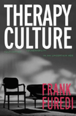
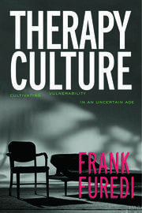
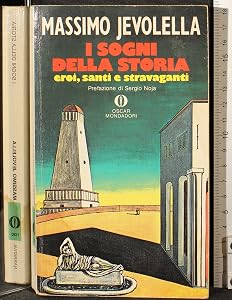
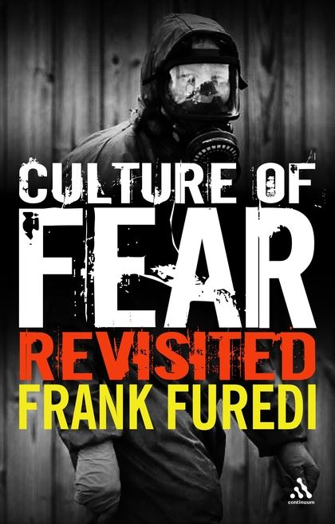
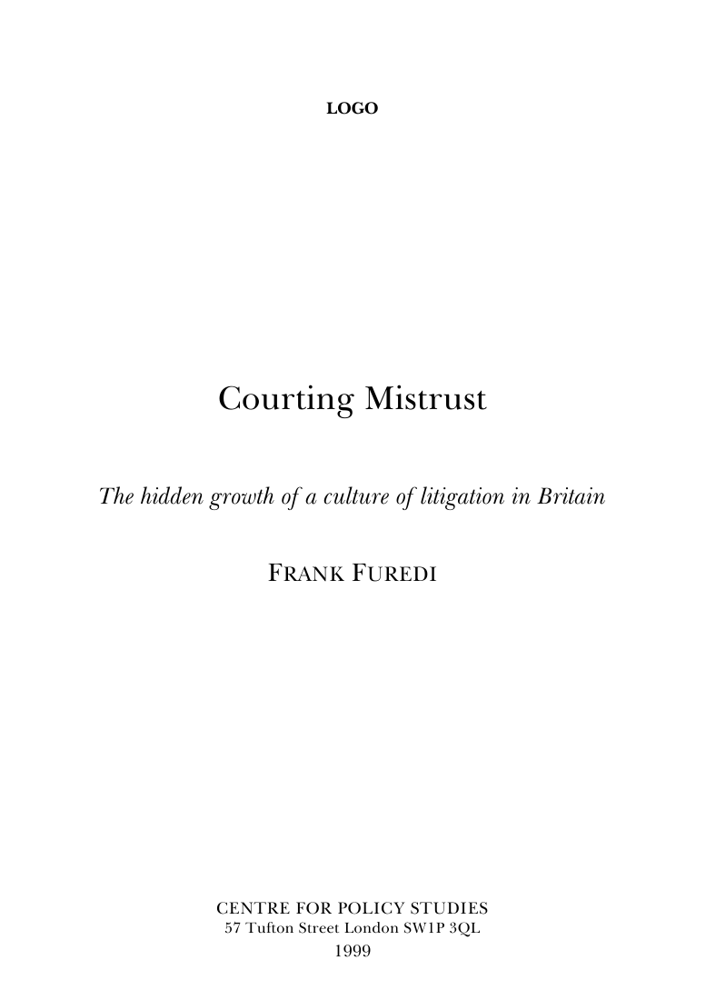
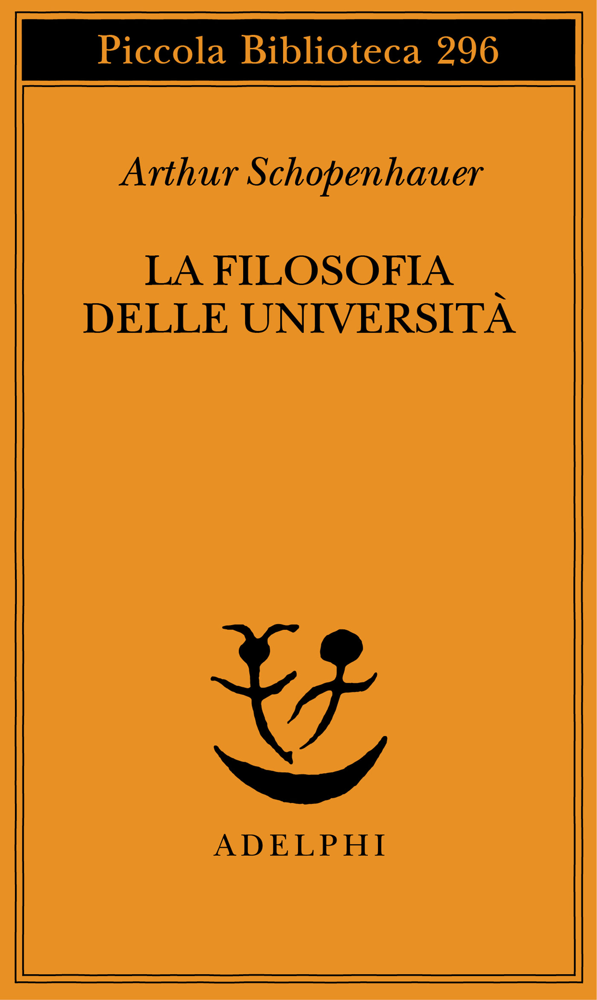
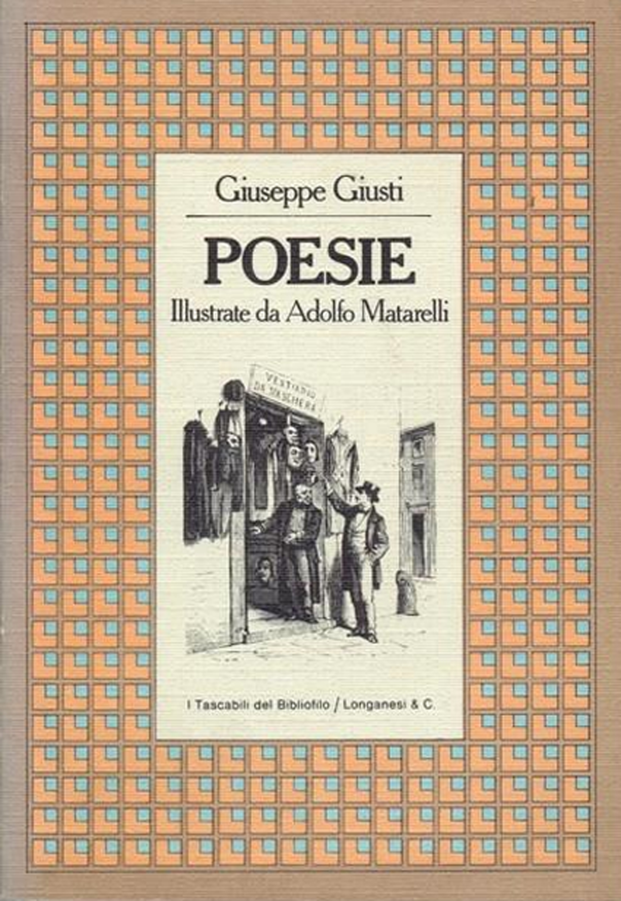
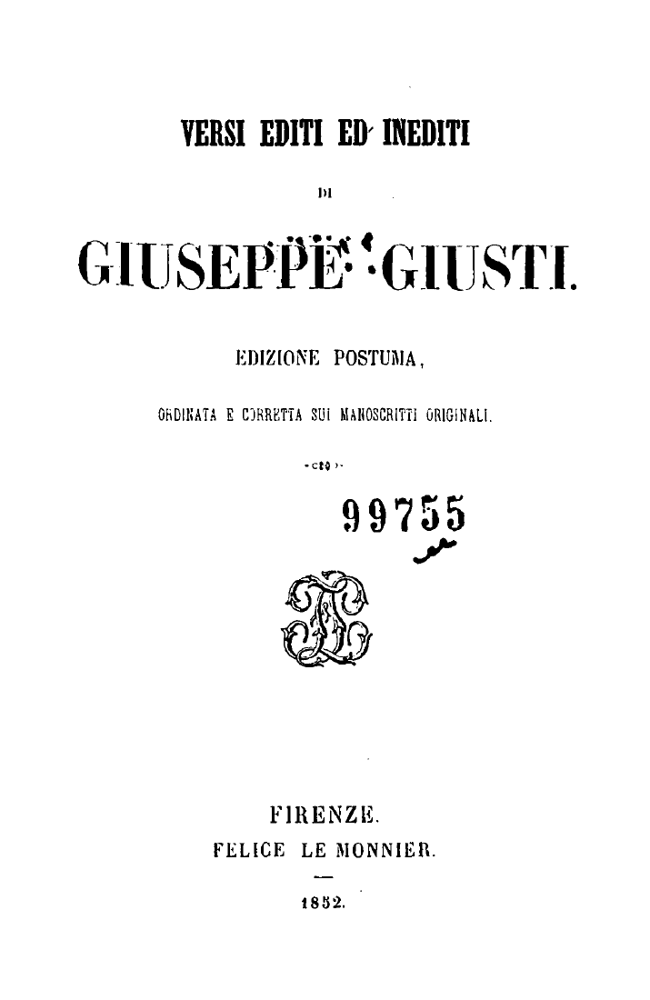
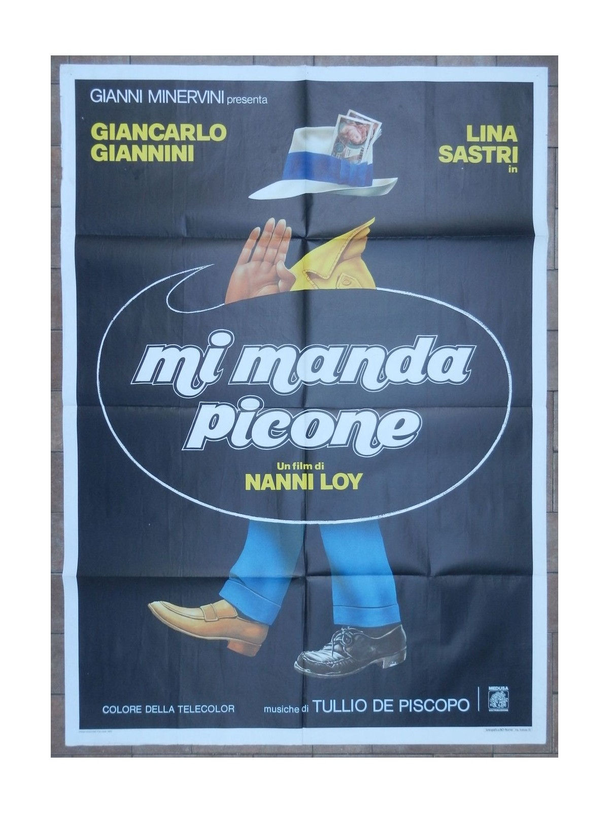
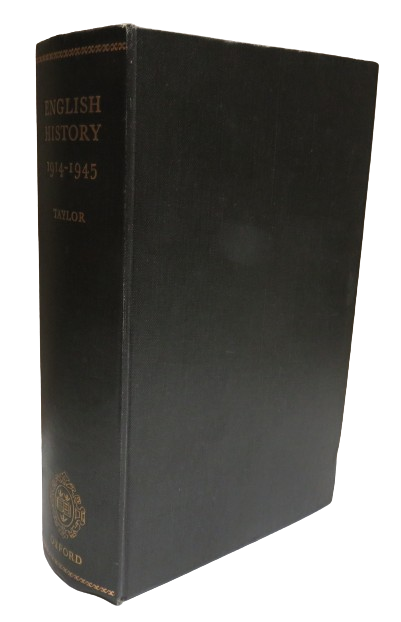

1:06:47 · 25 OPERE
Frank Furedi: Che fine hanno fatto gli intellettuali?
Il filo del discorso
La domanda di Furedi sulla scomparsa degli intellettuali diventa per Dr Divago un esame del rapporto fra studio, notorietà e disponibilità al dialogo. Bloom e la Dialettica dell’illuminismo introducono il problema di un sapere tecnicamente sviluppato che può perdere la capacità di interrogare i propri fini. Al centro del video c’è la lettura di una recensione di Blake Morrison a Therapy Culture: la scheda distingue le tesi di Furedi, l’ironia del recensore e il commento del relatore, senza ricavare diagnosi dall’aspetto delle persone. Schopenhauer offre il contrasto fra cercare la verità e prevalere in una disputa; due satire di Giusti mostrano come il linguaggio dell’encomio possa rendere visibili violenza e inganno. Il libro, il diario e1984 diventano poi strumenti per discutere memoria e riscrittura del passato. L’apertura della storia inglese di Taylor, il frammento di Nietzsche sui fatti e il confronto con i dibattiti di Lincoln riportano alla fatica del pensiero e al tempo necessario per argomentare. I giudizi politici e culturali restano attribuiti a Dr Divago, con riscontri e precisazioni sulle banche centrali, sulle edizioni e sul contesto dei riferimenti storici.
I libri nel discorso

Che fine hanno fatto gli intellettuali? I filistei del XXI secolo
Copertina: Raffaello Cortina, Minima 87, gennaio 2007; il catalogo dell’editore indica 212 pagine; ISBN 9788860300980.
Copertina autentica della fonte editoriale, ispezionata integralmente; l’edizione illustrata non è assegnata al filmato.
Titoli inglese e italiano espliciti;2004, copia2008 e italiano2007 sono riferimenti a edizioni della stessa opera, non nuovi libri.
Passaggio 0:01 ↗ · Fonti e libro ↗
The Closing of the American Mind
Copertina: Simon & Schuster · edizione del venticinquennale · 2012 · testo inglese
Copertina autentica dell’edizione di riferimento, controllata visivamente. Non identifica l’esemplare letto o citato nel video.
AllanBloom eTheClosingoftheAmericanMind,1987,espliciti; titolo già censito.
Passaggio 4:07 ↗ · Fonti e libro ↗
Dialettica dell’illuminismo
Copertina: Einaudi, Piccola Biblioteca Einaudi, 2010
Edizione illustrativa dell'opera, con traduzione di Renato Solmi e introduzione di Carlo Galli; non identificata nel video.
Titolo Dialettica dell’illuminismo esplicito e formula sullo splendore della terra illuminata.
Passaggio 4:51 ↗ · Fonti e libro ↗
La società del contrario
Copertina: Zambon · 2005
Copertina autentica dell’edizione di riferimento, controllata visivamente. Non identifica l’esemplare letto o citato nel video.
Titolo La società del contrario e2005 espliciti, insieme a presentazione editoriale.
Passaggio 6:56 ↗ · Fonti e libro ↗
The Empty Campus
Copertina: Lulu · edizione inglese di riferimento
Immagine associata all’ISBN di riferimento e controllata visivamente; edizione e traduzione non identificate come quelle citate o lette nel video.
The Empty Campus e2016 espliciti; il relatore precisa la disponibilità inglese.
Passaggio 7:44 ↗ · Fonti e libro ↗
Pull yourself together!
Copertina: The Guardian ·20dicembre2003 · illustrazione originale del libro recensito
Immagine autentica pubblicata con la recensione originale Guardian: è la copertina di Therapy Culture, il libro recensito. Non è una copertina autonoma della recensione, una fotografia di Morrison o un nuovo libro. L’immagine128x195 è stata vista intera e decodificata, senza ingrandimenti inventati.
BlakeMorrison,Guardian,recensione2003diTherapyCulture; titolo e data20dicembre2003 identificati nel documento primario. Il titolo dell’articolo è integrazione bibliografica dal testo letto,non pronunciato.
Passaggio 14:41 ↗ · Fonti e libro ↗
Therapy Culture: Cultivating Vulnerability in an Uncertain Age
Copertina: Routledge · copyright2004 · ISBN9780415321594
Copertina autentica dal CDN Routledge, titolo completo e Frank Furedi leggibili. Il libro era già recensito nel dicembre2003: la data copyright2004 non prova un errore del riferimento orale al2003. Questa specifica edizione non è attribuita alla copia del video.
Titolo TherapyCulture esplicito nella discussione della recensione;2003recensione/circolazione distinto da copyrightRoutledge2004.
Passaggio 16:37 ↗ · Fonti e libro ↗
I sogni della storia. Eroi, santi e stravaganti
Identificazione probabile
Fotografia della copertina di una copia Oscar Mondadori: sono visibili anche dorso e margini dei volumi accanto; non esemplare certificato nel video.: Mondadori, Oscar Narrativa, 1991, ISBN 9788804343349 — fotografia della copia usata
Il relatore nomina Jevolella, ricorda Mondadori e dice «I sogni della storia, credo»: l’identificazione del riferimento resta probabile per l’esitazione, pur essendo verificati esistenza e dati del libro. La fotografia originale del venditore Cartarum mostra una copia Oscar Mondadori con titolo, autore, sottotitolo e prefazione di Sergio Noja. Nessun anno o ISBN della copia del video è pronunciato.
Fonte locale segmenti 183–185: Massimo Jevolella a 1223.72 s (nome deformato dall’ASR), pubblicazione Mondadori a 1228.72 s, titolo seguito da «credo» a 1236.04 s. Identificazione probabile conservata.
Passaggio 20:36 ↗ · Fonti e libro ↗Il Romanzo della Rosa (Roman de la Rose)
Copertina dell’edizione inglese Princeton, traduzione Charles Dahlberg: diversa dalla traduzione Jevolella richiamata; edizione del video non identificata.: Princeton University Press, The Romance of the Rose, traduzione inglese di Charles Dahlberg, terza edizione; eBook distribuito il 6 giugno 2023, ISBN 9780691257778
Roman de la Rose è titolo esplicito nel richiamo al lavoro di traduzione di Jevolella. Guillaume de Lorris e Jean de Meun sono gli autori medievali, non Jevolella. La copertina autentica è dell’edizione inglese Princeton tradotta da Charles Dahlberg, terza edizione distribuita come eBook nel 2023: non è la copertina della traduzione italiana di Jevolella. Il catalogo Braidense distingue Arché 1983, attribuito a Lorris e descritto come traduzione in versi, dal volume Feltrinelli 2016 con entrambi gli autori. Non si estende automaticamente il dato 1983 alla traduzione dell’intero poema in due parti.
Fonte locale segmenti 186–187, da 1238.04 s: «ha tradotto, credo, il Roman de la Rosa», con titolo completo attraverso il confine fra i segmenti. L’esitazione riguarda il ricordo dell’attività di traduzione; il titolo è esplicitamente pronunciato, la traduzione Jevolella è riscontrata documentalmente.
Passaggio 20:38 ↗ · Fonti e libro ↗
Il castello (Das Schloss)
Copertina: Suhrkamp, edizione tedesca in brossura, 423 pagine, prima uscita della collana 2006, ristampa 10 luglio 2025; romanzo pubblicato postumo nel 1926.
Immagine autentica dell’opera, controllata visivamente; l’edizione di riferimento non è attribuita al filmato.
Kafka eIlCastello espliciti, metafora del potere conosciuto attraverso intermediari.
Passaggio 26:44 ↗ · Fonti e libro ↗
Culture of Fear
Copertina: Continuum · Culture of Fear Revisited · seconda edizione26ottobre2006 · ISBN9780826493958
Copertina autentica dell’edizione riveduta2006 presso Bloomsbury/Continuum, titolo Culture of Fear Revisited e Frank Furedi leggibili. Non è la copertina originale1997 citata nella recensione e non viene assegnata al video.
Titolo CultureofFear e1997 espliciti nella recensione letta; Revisited2006 dichiarata edizione riveduta,non altra opera.
Passaggio 31:05 ↗ · Fonti e libro ↗
Angst und Macht (Paura e potere)
Identificazione probabile
Copertina: Angst und Macht. Herrschaftstechniken der Angsterzeugung in kapitalistischen Demokratien, Westend, 1 luglio 2019, 128 pagine, brossura, ISBN 9783864892813. Copertina originale tedesca fornita dall’editore; Paura e potere è la resa del titolo nel discorso, non una edizione italiana accertata.
Immagine autentica dell’opera, controllata visivamente; l’edizione di riferimento non è attribuita al filmato.
Mausfeld e libro sulla paura riconoscibili; titolo non pronunciato. Collegamento probabile con AngstundMacht già censito.
Passaggio 31:46 ↗ · Fonti e libro ↗
Courting Mistrust: The Hidden Growth of a Culture of Litigation in Britain
Copertina: Centre for Policy Studies · aprile1999 · frontespizio pagina1 del PDF ufficiale
Frontespizio autentico dell’originale CPS1999, reso integralmente con Poppler. La parola LOGO nella parte superiore appartiene al PDF dell’ente e non è stata aggiunta né sostituita; il titolo, autore, editore, indirizzo e1999 sono presenti. È un frontespizio documentario, non una copertina esterna ricostruita. PDF integrale conservato solo nel privato.
CourtingMistrust e1999 espliciti. Titolo esteso e natura di report riscontrati nel PDFCPSoriginale.
Passaggio 32:07 ↗ · Fonti e libro ↗Paranoid Parenting: Why Ignoring the Experts May Be Best for Your Child
Copertina: Continuum ·25ottobre2008 · ISBN9781847065216
Copertina autentica dal CDN Bloomsbury, Frank Furedi e titolo leggibili; illustra l’edizione2008 con nuova introduzione, non l’originale2001 discusso nella recensione. Nessuna prescrizione educativa o sanitaria viene attribuita alla scheda.
ParanoidParenting e2001 espliciti. Edizione2008illustrata distinta dalla prima2001.
Passaggio 32:42 ↗ · Fonti e libro ↗
La filosofia delle università
Copertina: Adelphi, Piccola Biblioteca Adelphi 296, 1992, traduzione di Giorgio Colli, 141 pagine; ISBN 9788845909436.
Immagine autentica dell’opera, controllata visivamente; l’edizione di riferimento non è attribuita al filmato.
Saggio La filosofia delle università esplicito; non duplicata la raccolta Parerga per il medesimo richiamo.
Passaggio 34:12 ↗ · Fonti e libro ↗
L’arte di ottenere ragione. Esposta in 38 stratagemmi
Copertina: Adelphi, Piccola Biblioteca 274, 1991, 124 pagine, ISBN 9788845908569. Traduzione di Nicola Curcio e Franco Volpi, cura di Franco Volpi. Trattato postumo noto come Eristische Dialektik.
Copertina integrale autentica Adelphi arancione: autore, titolo, sottotitolo, numero 274 e marchio. Sostituita la versione di condivisione sociale con il file specifico della copertina individuato nella pagina dell’editore. Il collegamento al richiamo è probabile; non si dichiara che il relatore abbia pronunciato questo titolo.
L’arte di ottenere ragione esplicita nel contrasto fra vittoria nella disputa e verità.
Passaggio 34:38 ↗ · Fonti e libro ↗
Romeo e Giulietta
Identificazione probabile
Copertina: BUR / Rizzoli, 2023; traduzione di Carmen Gallo
Copertina dell’edizione con testo inglese a fronte, introduzione, note e nuova traduzione di Carmen Gallo. Edizione scelta come riferimento iconografico; nessuna edizione è confermata nel video. L’identificazione dell’opera nel video resta probabile.
Verso sulla rosa chiamata con altro nome, riscontrato in RomeoandJulietII.2 pressoFolger; titolo e traduttore non pronunciati, identificazione probabile.
Passaggio 36:57 ↗ · Fonti e libro ↗
Poesie (raccolta illustrata Longanesi, 1982)
Copertina della raccolta illustrata Longanesi 1982; distinta dalla raccolta Le Monnier 1852 e dalle immagini dei singoli componimenti.: Longanesi & C., 1982, I Tascabili del Bibliofilo 16, illustrazioni di Adolfo Matarelli; ISBN 9788830403482 associato dal catalogo LibroCo
Il relatore nomina Giuseppe Giusti, Longanesi, il 1982 e una raccolta illustrata; Poesie è la raccolta identificata dalla recensione contemporanea e dal catalogo. L’immagine autentica proviene dalla scheda LibroCo dell’edizione Longanesi 1982. Il codice ISBN 9788830403482 è associato a quella scheda, non letto sulla copertina o attribuito automaticamente all’esemplare del relatore. È la raccolta moderna menzionata nel contributo, distinta dal frontespizio Le Monnier 1852 già usato per i due componimenti. L’anno 1982 data questa edizione della raccolta, non la composizione delle poesie.
Fonte locale segmenti 322–325: a 2236.00 s compare Giuseppe Giusti; a 2244.45 s il relatore nomina Longanesi e «nell’82»; a 2255.24 s parla delle poesie e delle illustrazioni, quindi introduce La guigliottina a vapore. Il titolo bibliografico della raccolta è riscontrato separatamente.
Passaggio 37:35 ↗ · Fonti e libro ↗
La ghigliottina a vapore
Copertina: Versi editi ed inediti · Firenze, Felice Le Monnier1852 · frontespizio della raccolta contenente
Frontespizio autentico della raccolta storica1852 che contiene la poesia; pagina7 del PDF rasterizzata integralmente. Non è una copertina autonoma del componimento né l’immagine della raccolta Longanesi1982 citata nel video. Quest’ultima resta un candidato separato in attesa della sua immagine verificata.
Titolo La ghigliottina a vapore e lettura riconoscibile. Poesia riscontrata integralmente nella raccolta1852pp1–2; cifre e macchina sono satira.
Passaggio 37:45 ↗ · Fonti e libro ↗Apologia del Lotto
Copertina: Versi editi ed inediti · Firenze, Felice Le Monnier1852 · frontespizio della raccolta contenente
Frontespizio autentico della raccolta storica1852 che contiene la poesia; pagina7 del PDF rasterizzata integralmente. Non è una copertina autonoma del componimento né l’immagine della raccolta Longanesi1982 citata nel video. Quest’ultima resta un candidato separato in attesa della sua immagine verificata.
Versi sulla legge che mantiene il lotto e sul capo del gregge identificano la poesia, verificata integralmente nella raccolta1852pp37–41. Il titolo è integrazione bibliografica dai versi riconoscibili.
Passaggio 42:32 ↗ · Fonti e libro ↗
1984
Copertina: Newton Compton · edizione illustrativa
1984 esplicito nel confronto sulla riscrittura del passato.
Passaggio 44:20 ↗ · Fonti e libro ↗
Mi manda Picone
Fotografia dell’intero manifesto cinematografico originale italiano: pieghe, margini e supporto circostante visibili; non copertina DVD o fotogramma del film.: Manifesto cinematografico originale italiano 2F, 100×140 cm secondo il catalogo fotografico Cibafil; esemplare catalogato 1983, non DVD o fotogramma
Mi manda Picone è nominato esplicitamente come film in una breve allusione alla raccomandazione e al «mi manda papà»; il contributo non ne racconta la trama. Regia Nanni Loy e sceneggiatura Loy/Elvio Porta sono verificate nell’Archivio del Cinema Italiano ANICA, che cataloga il film 1983 e riporta il visto 79490 del 30 dicembre 1983. Cinematografo usa 1983, Rai Teche lo richiama come 1984: questa differenza rimane dichiarata, senza inventare una data della prima. Il catalogo fotografico Cibafil documenta un manifesto originale italiano; la foto non prova che l’esemplare sia apparso nel video.
Segmento ASR 453, 3025.02–3029.50 s: il relatore afferma che c’era un film chiamato Mi manda Picone, dopo il richiamo polemico a «mi manda papà». Titolo e natura cinematografica espliciti, nessuna trama specifica esposta.
Passaggio 50:25 ↗ · Fonti e libro ↗
English History 1914–1945
Copertina: Oxford / ClarendonPress · copia1966 fotografata dal libraio J.W.B.Books · prima edizione1965
Fotografia originale della legatura della copia1966 offerta da J.W.B.Books. Il dorso reca English History1914–1945, Taylor e Oxford. Non è una sovraccoperta né la specifica copia1967 del relatore; non è stato applicato un ISBN moderno a questa copia storica.
A.J.P.Taylor,EnglishHistory1914–1945,Oxford e copia1967 espliciti; segue lettura dell’apertura. Prima1965, copiafoto1966 distinte.
Passaggio 50:49 ↗ · Fonti e libro ↗
Frammento postumo 7[60], fine 1886–primavera 1887
Identificazione probabile
Copertina della raccolta contenente il frammento: Copertina della raccolta Frammenti postumi 1885–1887, Adelphi, Opere volume VIII, tomo I, edizione italiana sul testo critico Colli e Montinari; traduzione Sossio Giametta, prima edizione 1975.
Copertina autentica Adelphi bianca: autore, intervallo cronologico, volume e curatori leggibili. Non è un’edizione autonoma del frammento né una copia identificata nel filmato. Il sito attuale e il catalogo storico riportano paginazioni diverse: non vengono mescolate per attribuire una precisa ristampa alla fotografia.
Nietzsche e formula sui fatti/interpretazioni espliciti; numerazione7[60]nonpronunciata, riuso probabile del frammento già verificato. Non assunta come prova filologica la spiegazione diTatsachen del relatore.
Passaggio 57:27 ↗ · Fonti e libro ↗
Civilization and Ethics (Kultur und Ethik)
Copertina della raccolta: Prometheus · The Philosophy of Civilization · 1987 · raccolta in inglese
Copertina della raccolta Prometheus del 1987 che contiene The Decay and Restoration of Civilization e Civilization and Ethics. I due saggi, originariamente distinti, restano voci separate. L’edizione in inglese dell’immagine non è attribuita al video.
Schweitzer edEticaeciviltà espliciti come richiamo alla precedente trattazione; riuso della stessa operaKulturundEthik/CivilizationandEthics.
Passaggio 1:03:43 ↗ · Fonti e libro ↗